逐日行程
三天的節奏
每個地點都標註停留時間、移動方式與建議出發時間。標示「選擇性」的活動可依當天體力自由取捨。
22:29
抵達巴黎北站
歐洲之星準時抵達北站。先別急著趕行程——今晚以休息與補充體力為主。
🚶步行 2 分鐘穿過馬路即達
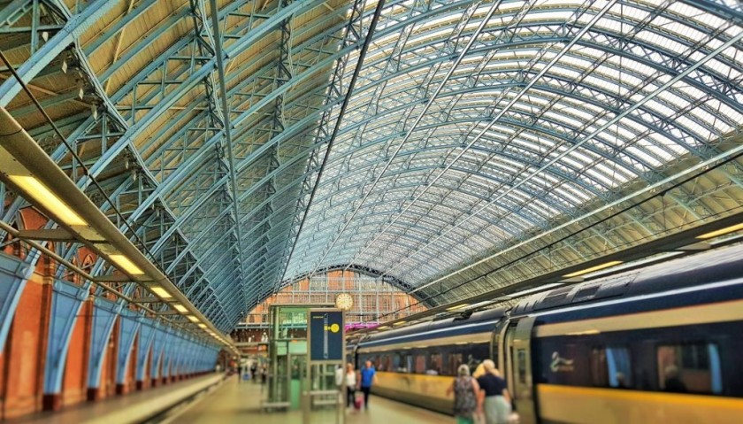
🚕搭計程車或 RER B 線前往左岸住宿（約 25–35 分）
約 23:45
已訂左岸第 5 區的 Hotel Elysa-Luxembourg（6 Rue Gay Lussac），緊鄰盧森堡公園與拉丁區，位置絕佳（評分 9.4）。Classic Room with Balcony（已升等）、含免費 WiFi。早點休息，迎接精彩的週六。
08:25 · 從旅館出發
🏨 Hotel Elysa-Luxembourg 出發
用過早餐後出發。旅館到橘園約 25–30 分鐘：最快是搭計程車（約 15 分 €15–20）；地鐵則步行至 Odéon 轉 M1/M12 至 Concorde，再步行 5 分。為了 09:00 開門即進、避開人潮，建議 08:25 出門。
🚕計程車或地鐵前往橘園（約 25–30 分）
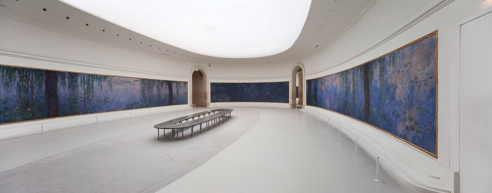
🚶穿過杜樂麗花園散步 約 10 分鐘
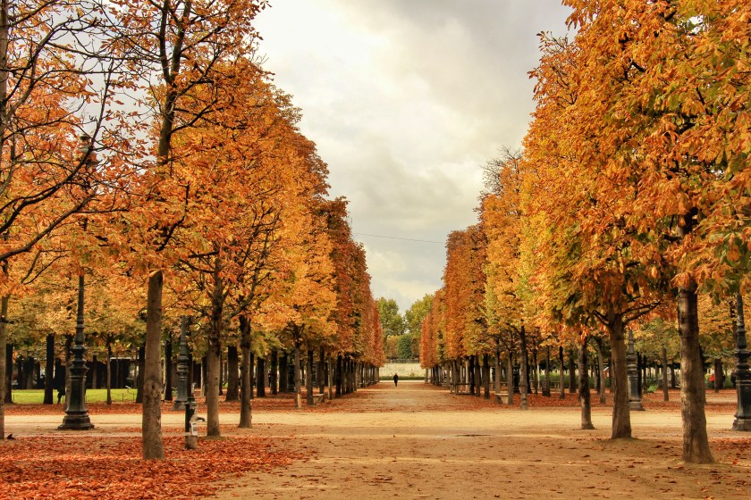
🚶沿 Rue de Rivoli 步行 約 15 分鐘
12:30 · 約 2–2.5 小時 · 建議 12:15 到場
本趟的重頭戲：日裔主廚小林圭的米其林三星。週六供應 Discovery 午間套餐，料理以精緻海鮮、家禽與蔬菜為主（招牌「蔬菜花園」沙拉），非生食路線。訂位時請先告知不吃牛排、偏生與過肥的肉類、生魚片，廚房可細緻調整。
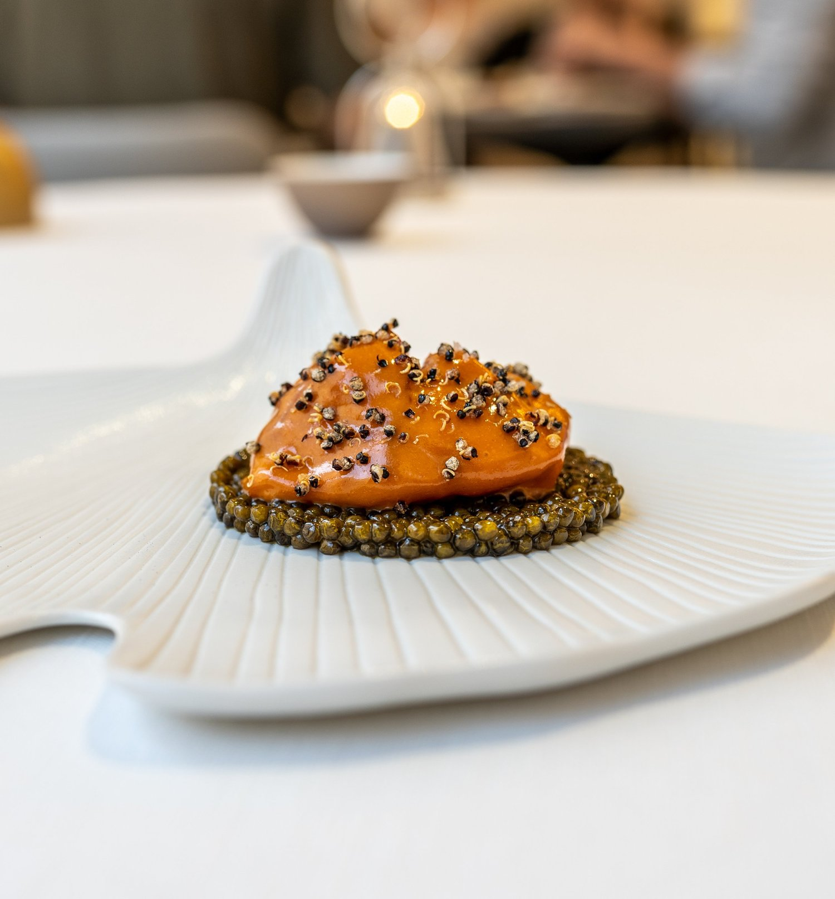
🚶步行過塞納河 約 15 分鐘（或地鐵 1 站）
15:30 · 約 2 小時 · 最後入場 17:00
由舊火車站改建，是全球印象派與後印象派收藏的聖殿——梵谷、莫內、雷諾瓦、竇加、塞尚齊聚。別錯過五樓那座著名的大鐘與屋頂視野。（2026年起接待區整修中，入場前請確認動線。）
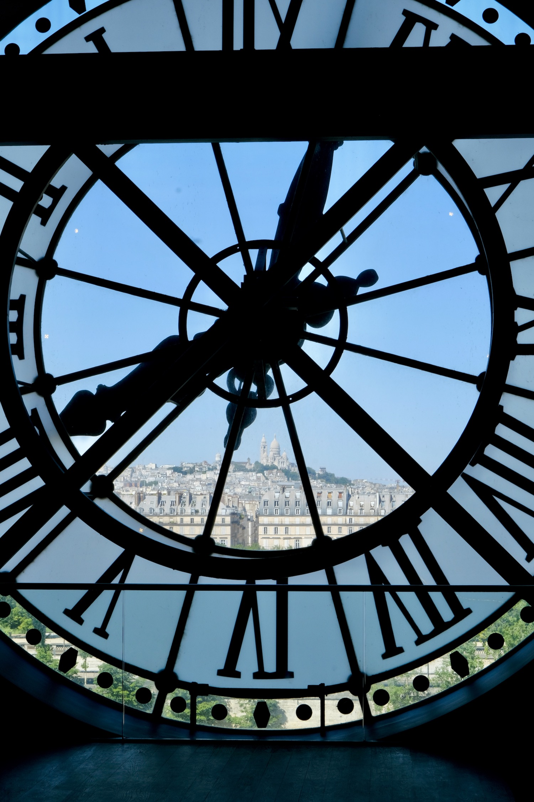
🚇地鐵或散步前往西堤島 約 20 分鐘
18:00 · 約 45 分鐘 · 建議線上預約
經歷 2019 大火與五年修復，2024 年底重新開放的哥德式石造教堂代表。清洗後的石牌、重生的玻璃玫瑰窗與宏偉中殿明亮如新。免費入場，週末人潮多，建議官網預約時段免排隊。

🚶步行 5 分鐘至聖禮拜堂（同在西堤島）
🚶步行 2 分鐘至聖禮拜堂
約 19:00 或 20:30（訂票頁面為準）· 約 1 小時
13 世紀哥德傑作，15 面巨型彩繪玻璃環繞。在這裡聆聽韋瓦第《四季》、巴哈與帕海貝爾《卡農》，是藝術、建築與音樂的三重盛宴——對初訪者震撼、對老手依然難忘。實際曲目依當晚場次而定（訂票頁面會標明）；門於開演前 15 分鐘關閉，請提前 45 分鐘到場安檢。
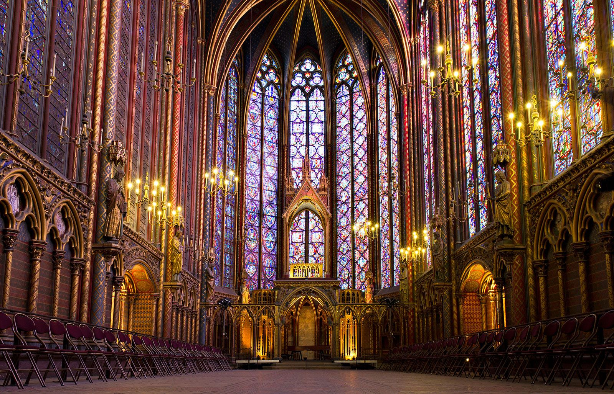
22:00 · 夜遊選擇性
塞納河畔 & 拉丁區
音樂會後沿塞納河散步，遠眺點燈的聖母院，或在拉丁區找間咖啡館收尾，為完美的一天畫下句點。
🚇從西堤島搭 M4 / RER B 一站回 Luxembourg（約 15–20 分）
約 22:30 · 回旅館
🏨 返回 Hotel Elysa-Luxembourg
聖禮拜堂到旅館距離很近（同在左岸）：從 Cité 搭 M4 到 Odéon 步行，或從 Saint-Michel 搭 RER B 一站即到 Luxembourg，步行數分鐘即返旅館；深夜亦可直接搭計程車（約 10 分）。
09:05 · 從旅館出發（可寄放行李）
🏨 Hotel Elysa-Luxembourg 出發
退房後請旅館寄放行李（大多數飯店提供免費寄物），身輕如燕出發。旅館到羅丹美術館約 25 分：計程車最快（約 12 分）；地鐵則步行至 Sèvres–Babylone 轉 M13 至 Varenne。為 10:00 開館前抵達，建議 09:05 出門。
🚕計程車或地鐵前往羅丹美術館（約 25 分）
10:00 · 約 1.5 小時 · 開館即進
給老手的第一份驚喜：相較人潮洶湧的大館，這裡是一座優雅寧靜的宅邸與玫瑰花園。《沉思者》《地獄之門》就在綠意中，週日早晨格外靜謐。
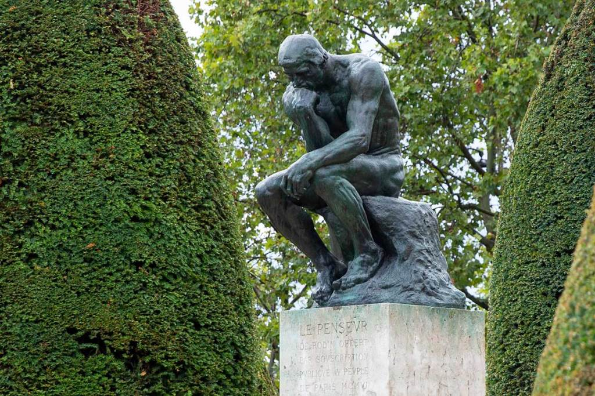
🚇地鐵約 15 分鐘前往左岸聖日耳曼
12:30 · 約 1.5 小時
左岸經典小酒館，週日照常營業。點一份紅酒燉雞（coq au vin）或烤雞，全熟燉煮、香濃下飯，完全避開生肉與牛排，是返程前溫暖飽足的一餐。
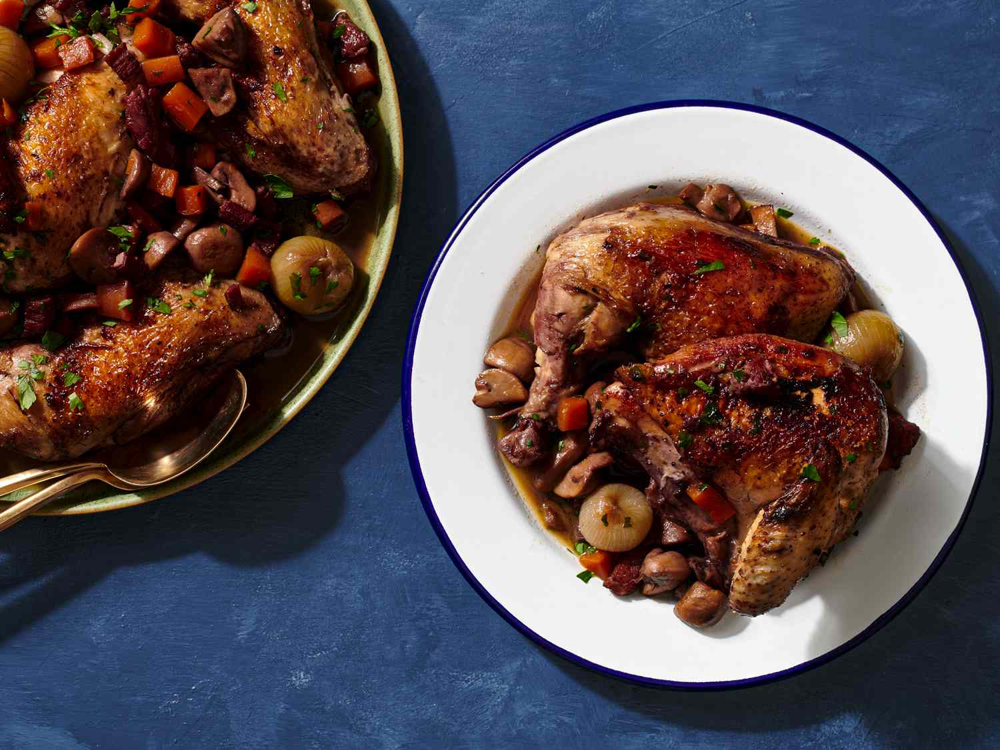
🚶下午行程三選一（依體力選擇）
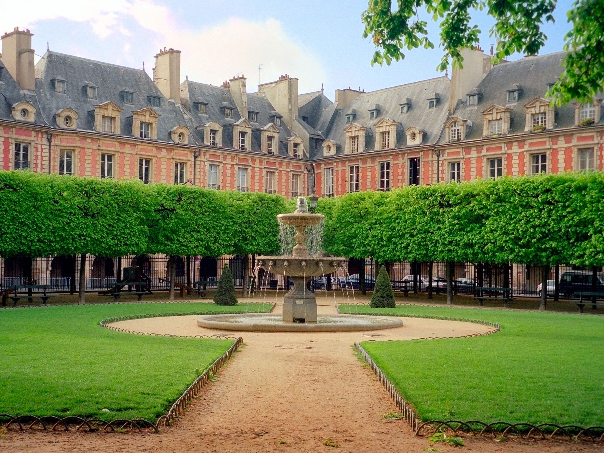
14:15 · 下午選項 B選擇性
給老手的莫內驚喜：全球最大莫內收藏，鎮館之寶正是定義「印象派」一詞的《印象·日出》。觀光客稀少，是莫內迷的私房聖地。
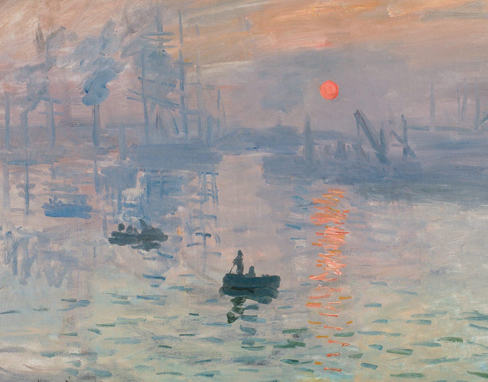
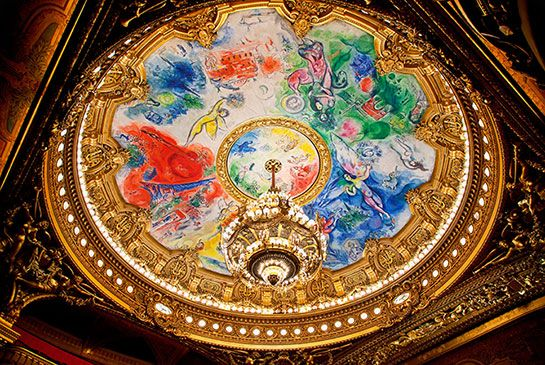
🏨先回旅館取回寄放的行李（約 18:45）
約 18:45 · 回旅館取行李
🏨 回 Hotel Elysa-Luxembourg 取行李
下午行程結束後回旅館取回早上寄放的行李。旅館到北站約 25–35 分：計程車最省事（約 20–30 分，連同行李）；地鐵則 RER B 從 Luxembourg 直達 Gare du Nord（約 15 分，但帶行李較不便）。
🚕前往北站（建議發車前 60–75 分鐘抵達）
約 19:45–20:00 抵站 · 21:02 發車
返回倫敦
搭乘 21:02 歐洲之星返回倫敦，22:30 抵達 St Pancras。帶著滿滿的藝術與音樂回憶結束旅程。